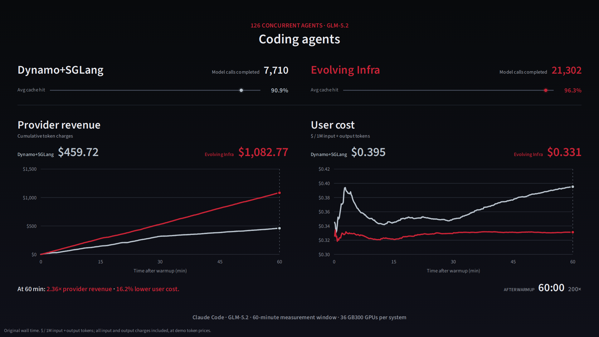
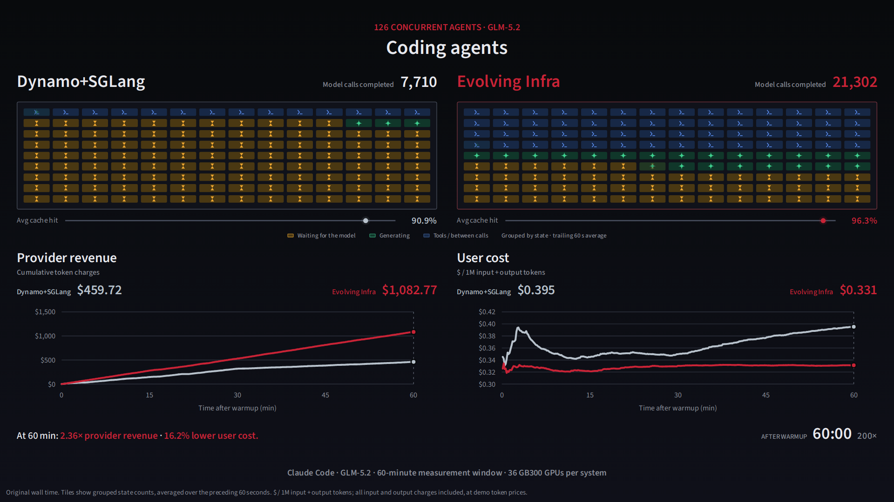

One task. Then many agents.
Two presentations of the same measured workloads: curves alone, or curves with a calmer session grid inspired by S4. Both continue from the single computer-use task and Claude Code session.
NEW · CUA + CC: single task → concurrent agents · Two fleet layouts ↗ · Watch CUA + Claude Code ↗ · Website feedback preview ↗ · Workload + both systems ↗ · One response at actual speed ↗

More space for provider revenue and user cost. A thin cache-hit marker and completed-call count keep the context visible.
Watch the clean version ↗
S4-inspired colors and symbols. Waiting builds from the bottom; state boundaries move smoothly. The same revenue and cost curves remain below.
Watch the grid version ↗
Claude Code prompts, tool results, file diffs and a live working indicator follow the same 25 measured model calls. Cache hit and cost per million tokens update throughout; tool-call time is zero. The fleet comparison follows, with curves alone or a grouped session grid. User cost is measured per million input + output tokens.
Play the 49-second Claude Code segment ↗
One shared clock, the same 25 model calls and 15,028 output tokens. Full session at 45×, or one response at 1× to see the stream and scrolling. Request timing is measured; terminal text is illustrative.
Open terminal replay ↗The average cache hit rate sits right of each side name, as in S2: Dynamo+SGLang falls from 95% to 91% over the hour, Evolving Infra stays at 96%. Below each panel only the bar of finished agents remains. Both grids always show all 126 agents: agents waiting for their first token (TTFT, amber) form a level from the bottom, agents decoding (green) stack on top, and the rest are in a tool call (blue). At the start, Evolving Infra's three nodes move to decode one at a time while the clock and the agents keep running (in the run, the three moved together at 00:20).
Open ↗S2 with three changes. At 00:20 the clock stops while Evolving Infra's three nodes move to decode one at a time. The amber tiles, agents waiting for their first token (TTFT), pile up from the bottom: their number is the measured count, so the grid reads as a level and barely flickers. Under each panel, a second bar shows the average cache hit rate (one tick per percentage point), next to the bar of finished agents. Other versions of the same page: cache hit over the last 5 minutes, or tiles that mark individual agents (links below).
Open ↗S1 with the nodes grouped: prefill nodes on the left, decode nodes on the right. A node that changes role slides to the other group. Dynamo+SGLang's restarting node drops out of the row for 11-14 minutes; Evolving Infra's node moves in 33 seconds. The header shows each side's cache hit rate: Dynamo+SGLang falls from about 95% to about 70% at minute 31, Evolving Infra stays at about 96%.
Open ↗Amber tiles are agents waiting for their first token (TTFT); their number equals the measured count at every moment. The bars under the panels count finished agents, as in part 1. Each time Dynamo+SGLang restarts a node to change its role, the node is out of service for 11-14 minutes and amber floods its grid. Evolving Infra changes a node in place in 33 seconds.
Open ↗
Two grids of 126 agent icons that flicker between waiting, writing and running a tool. The difference shows only in the two counters at the bottom.
S4 variants: level, average cache hit · level, cache hit last 5 min · agent tiles, average cache hit
S3 variants: level, average cache hit · level, cache hit last 5 min · agent tiles, average cache hit · agent tiles, cache hit last 5 min
Earlier round, not chosen
All five were more complex and more distracting than the current part 2.
The same Claude Code session (25 model calls) replays on both systems under one session clock, like the OSWorld part. At 10:51 Evolving Infra has finished all 25 steps while Dynamo+SGLang is at step 13. Most of the elapsed-time difference comes from first-token waiting, and three times it had forgotten the conversation and re-read it. One example session, not an average.
Open ↗Each side is an hourglass of 126 agents: on top they wait for the model, in the neck the model writes, at the bottom they run tools. Near minute 30 Dynamo+SGLang's neck clogs with re-reading and almost every agent piles up on top, while Evolving Infra keeps flowing. Agents finished: 52 against 117.
Open ↗What the model reads. Pages of conversation fall into the model: white is new reading, amber is re-reading a conversation it had forgotten. After minute 30 almost everything Dynamo+SGLang reads is re-reading, and its answers nearly stop. Calls answered: 7,710 against 21,302.
Open ↗Nine machines that read or write, with the waiting agents in line in front. Dynamo+SGLang changes a machine's job by restarting it, out of service for about 13 minutes each time. Evolving Infra changes one in place in 33 seconds and keeps serving. The length of the line shows the effect.
Open ↗Keeps the current idea of showing all 126 agents, but paints each agent's hour as one row instead of flickering icons. Waiting builds up as amber area, a ribbon on top shows re-reading, and red checks mark finished agents: 52 against 117.
Open ↗